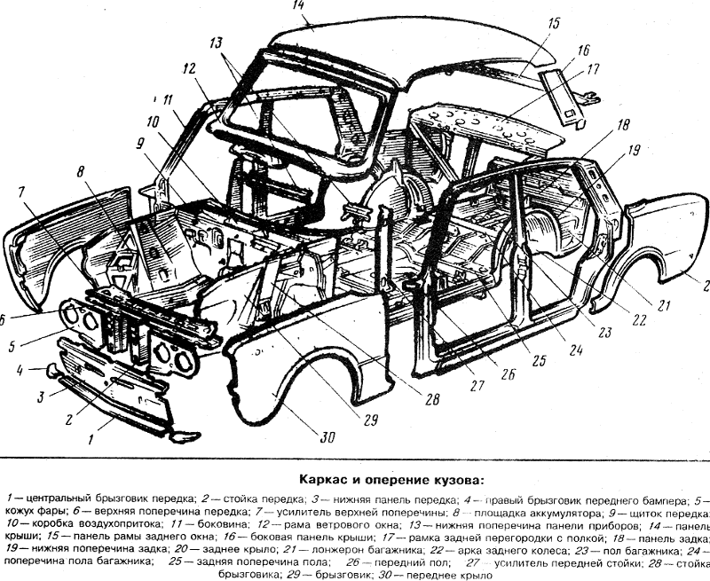

ВАЗ-2103 был разработан совместно с итальянской фирмой Fiat на базе модели Fiat 124. Автомобиль
широко экспортировался и пользовался популярностью даже в странах Запада. На экспорт ВАЗ-2103
шёл под названием Lada 1500.
История
При подписании в 1966 году договора между Минавтопромом СССР и компанией Fiat было оговорено,
что Fiat предоставит советской стороне полную техническую документацию на две комплектации
автомобиля — «норма» и «люкс». Представленные готовые решения от Fiat были таковы: для «нормы» —
Fiat 124 (на базе которого началось производство ВАЗ-2101), а для «люкса» — Fiat 125 (на базе
которого началось производство ВАЗ-2103). ВАЗ-2103 представляет собой совместную разработку Fiat
и ВАЗ. Работы по дизайну автомобиля выполнил Центр стиля Fiat, а по технической оснастке под
советские условия эксплуатации — в конструкторском отделе ВАЗ. Сердцевина кузова использовалась
от ВАЗ-2101.
Разные виды фартуков ВАЗ-2103
Конец 1972 - середина 1973 «Глухой» фартук. Такой фартук шёл на первых 24 тысячах автомобилях
С середины 1973 по середину 1975 г.г. пошла так называемая «тёрка»
С середины 1975 и до конца производства шли два «окна», которые так же перешли и на ВАЗ-2106
В 1972 году собрали 1429 машин, из которых 911 машин — это ВАЗ-2103В (В — «временный»). Эта
партия комплектовалась салоном от ВАЗ-2101 в связи с тем, что изначально планировали выпустить
лишь 500 автомобилей в 1972 году, и на оставшиеся машины не хватило комплектующих салона.
Всё это, вкупе с хорошим качеством сборки, сделало эту машину одной из самых престижных моделей
советского автопрома 1970-х годов, а некоторые ценители марки считают её самой элегантной и
стильной моделью ВАЗа. В декабре 1974 года эту модель отметили «Знаком качества».
Стоимость ВАЗ-2103 составляла 7500 рублей, в то время как ВАЗ-2101 стоил 5500 рублей. В
советское время ВАЗ-2103 считался люксовым автомобилем, который уступал по престижности только
ГАЗ-24 «Волга».
В 1976 году планировалось начать производство версии ВАЗ-2103 в кузове универсал, однако в серию
эта модификация не пошла. Было выпущено всего три таких автомобиля.
Несмотря на изменённую в 1975 году форму переднего фартука и введение в 1977 году более
современных клемм и соединений электропроводки, за всё время производства на конвейере
автомобиль не претерпел никаких значительных внешних изменений.
Миллионный автомобиль, выпущенный на АвтоВазе — ВАЗ-2103
За 12 лет было выпущено 1 304 899 автомобилей «третьей» модели. Чуть более «престижная» модель
ВАЗ-2106, являвшаяся по факту модернизацией «тройки», выпускалась с 1976 до 2006 года.
В текущий момент известны:
самый ранний автомобиль ВАЗ-2103, конвейерный номер 0 000 047, выпуск сентябрь 1972.
самый поздний автомобиль ВАЗ-21033, конвейерный номер 1 305 735, выпуск конца 1983.
Конструкция
Двигатель
Четырёхцилиндровый, карбюраторный, с верхним расположением распределительного вала.
Объём — 1452 см³.
Диаметр цилиндра — 76 мм, ход поршня — 80 мм.
Степень сжатия — 8,5.
Мощность — 77 л.с. при 5600 об/мин.

Трансмиссия
Механическая, четырёхступенчатая. На автомобилях более позднего года выпуска — пятиступенчатая
(с пятью передачами переднего хода и одной заднего).
На всех передачах переднего хода установлены синхронизаторы.
Зубчатые колёса первой, второй и третьей передач имеют постоянное косозубое зацепление, что
снижает шумность и увеличивает долговечность работы коробки передач.
Салон
Обшит пластиковыми материалами. Выглядывающие участки металлических элементов скрыты за
пластиковой обшивкой.
Потолок обшит тканью-кожзаменителем «в дырку», перфорированная ткань закрывает солнцезащитные
козырьки.
На пол постелены прорезиненные коврики.
Сиденья стали немного шире, но на них не было подголовников. Для удобства водителя и переднего
пассажира впервые установлены подлокотники на дверях и в центральной части между сиденьями.
Модификации
ВАЗ-2103В (вариант 23) — 1972, выпущена тиражом в ~1000 экземпляров. Имеет индекс «В» —
временная серия, с особенностями по интерьеру (салон от 2101) и проводке.
ВАЗ-21031 — 1975, предшественница модели ВАЗ-2106, мелкосерийная с двигателем ВАЗ-21031 (1,6
л; 80 л. с.).
ВАЗ-21032 — 1973—1981, для экспорта в страны с левосторонним движением[13].
ВАЗ-2103 — 1977—1983 (экспортное наименование — Lada 1500S Automatic), с автоматической коробкой
передач. На этой модели применялся трёхдиапазонный «автомат» General Motors 3L30 (TH180) (КПП
производилась на французском заводе компании в Страсбурге, с 1969 по 1998 год). Мотор
комплектовали итальянским карбюратором Weber. Переделками занимались импортёры/дилеры советских
машин в странах Западной Европы.
ВАЗ-21033 — 1977—1983 (экспортное наименование — Lada 1300s), с двигателем ВАЗ-21011 (1,3 л; 69
л. с.).
ВАЗ-21035 — 1973—1981, экспортная с двигателем ВАЗ-2101 (1,2 л; 64 л. с.)[
Модель
Эту модель я залил у сабя на аккаунте. Модель на скачивание более детальна, но у неё нет
текстуры. Из-за детальности я её выбрал для печати.